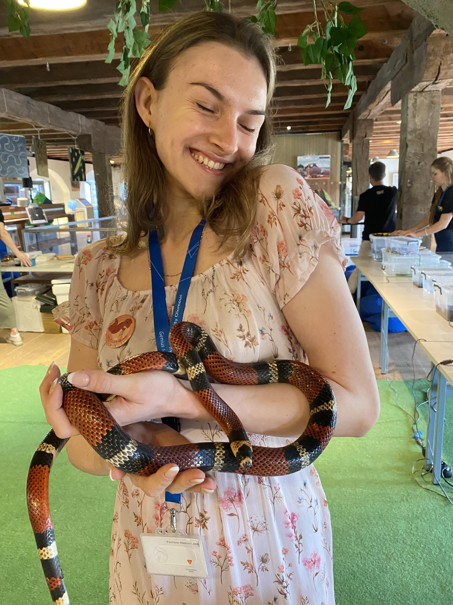

Bachelor's thesis

Bachelor's thesis on the topic 3D visualization of architectural heritage – design and creation of 3D models of selected objects and their interactive presentation in web environment.



I am a master’s student in geoinformatics at Palacký University. I enjoy 3D modeling, maps, and finding relations in data.
I have experience working on projects for universities, government agencies, and public outreach events. I enjoy working both in a team and independently; one of my strengths is effective time and task management.
Bachelor's thesis on the topic 3D visualization of architectural heritage – design and creation of 3D models of selected objects and their interactive presentation in web environment.

Teamwork on the design of a map application: data analysis, cartographic visualization and preparation of a simple prototype for presentation to the jury.

Creation of 3D models of sacred objects, preparation of data for 3D printing and visualization for popularization and educational materials.

Creation of graphic projects within the scope of the study.

Creation of schemas of engineering networks for state administration.

Collection of maps created within the scope of the study and work.
3D Modeling • Maps • GIS
E‑mail: dominikova.patricie@gmail.com
LinkedIn: Patricie Dominiková
Creation of schemas of engineering networks (especially optical cables) and update of map base data for the needs of the city.
Modeling sacred objects (churches, ...) for the history department within the NAKI III project.
Leading clubs and suburban camps, work and communication with children and adults, translation, map creation, work at the information center.
Ambassador for UPOL and the Department of Geoinformatics, database updates, processing of survey data.
Administrative support for the Newton Program and contact person for students.